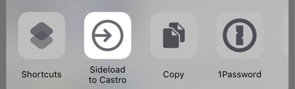

Эта заметка будет интересна только владельцам айфонов.

Хочу рассказать об одной офигенской фиче плеера для подкастов Castro — Sideloads. По-русски ее можно перевести что-то типа "сторонний контент", а смысл ее в том, что в папку iCloud Drive'а можно загрузить свой аудио файл и слушать его в плеере, как и обычный эпизод подкаста, включая всякие плюшки вроде ускоренного проигрывания и вырезания долгих пауз. Аудио книги я не слушаю, поэтому долгое время я эту фичу игнорировал, ибо стороннего контента у меня не наблюдалось. Но тут совершенно случайно я выяснил, что этот сторонний контент можно создать самому, причем из любого ютубовского ролика, и для этого не нужно плясать с бубном, а достаточно просто нажать одну кнопку и подождать пока Castro скачает видео, вырежет из него звук и добавит в нужную папку самостоятельно! А поскольку я переодически смотрю какие-то интервью, в которых почти никогда ничего не происходит (познер, или дудь или что-то еще), и, собственно, смотреть их вовсе необязательно (и часто скучно), то это оказалась какая-то совершенно киллер-фича для меня, на которую я даже не пожалел денег (да, за киллер-фичи иногда приходится платить).
К слову, я мог бы купить YouTube Premium и наверное делать все то же самое, но что-то у меня не зашла эта тема с отдельным приложением для ютуба, увы.